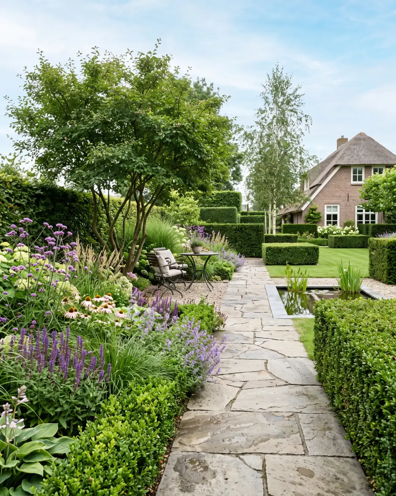
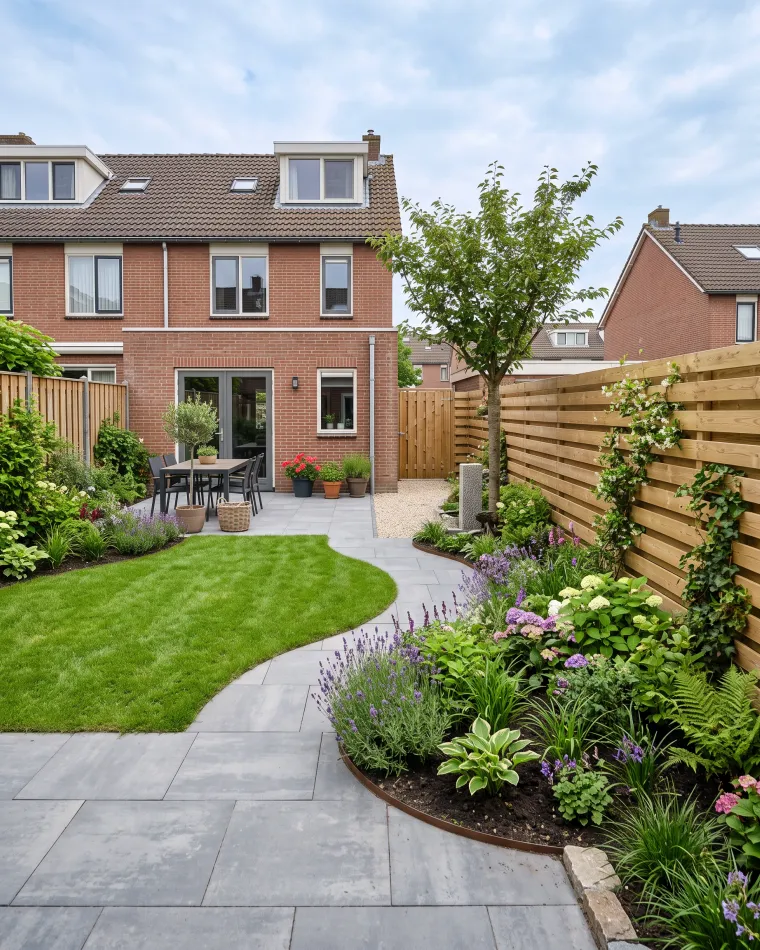
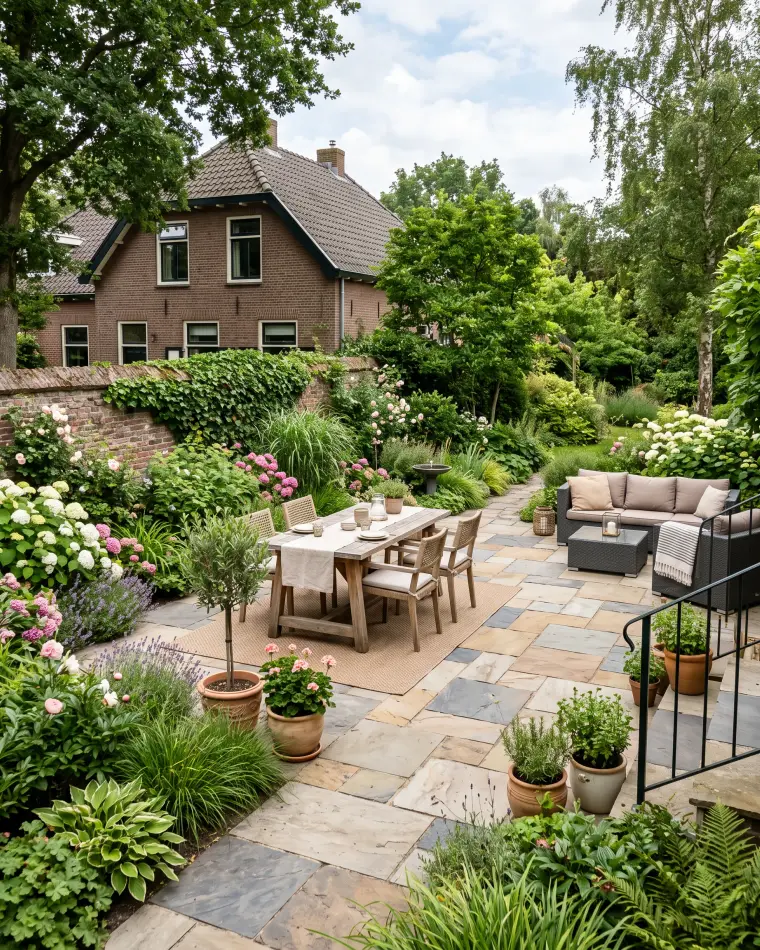

Fictief voorbeeldbedrijf, gebouwd door Belvanger om te laten zien wat mogelijk is. Zelf zo'n website laten bouwen →
Erkend hovenier · regio Breda
Van ontwerp tot onderhoud, wij leggen tuinen aan die jaren mooi blijven. Vakwerk met streekkennis, een vaste prijs vooraf en oog voor elk seizoen.

Wat wij voor u doen
Vier vaste diensten, elk met een eerlijk prijsanker vooraf. Klik open voor wat er precies bij hoort.
Voorbeeldprijzen, indicatief en per project verschillend. U krijgt altijd vooraf een vaste prijs op maat.
Een mooie tuin groeit, maar begint bij vakwerk.
Familiebedrijf · vaste prijs vooraf
Ons werk
Straks staan hier de echte foto's van úw projecten. Zo laat u nieuwe klanten precies zien wat ze van u kunnen verwachten.

Nieuwe tuin aangelegd · Breda
Terras & bestrating · OosterhoutOver ons
Van den Berg Tuinen & Hoveniers is een familiebedrijf uit de regio Breda. Wij komen langs, kijken naar uw grond en uw wensen en adviseren daar eerlijk over. U krijgt dezelfde hoveniers over de vloer, een vaste prijs vooraf en een tuin die netjes wordt opgeleverd.
Bel direct of vraag een vrijblijvende offerte aan. Wij komen langs, adviseren eerlijk en spreken vooraf een vaste prijs af.
076 - 503 44 21Ma t/m za bereikbaar · offerte doorgaans binnen 24 uur.
of laat uw gegevens achter
Voorbeeldformulier, dit verstuurt niets. Op uw eigen website komt elke aanvraag direct binnen in uw dashboard, met een melding op uw telefoon.